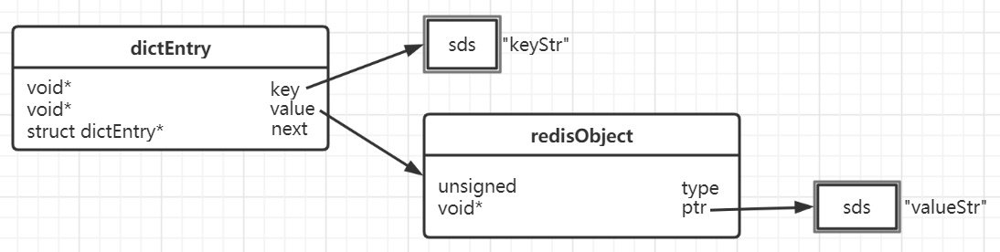
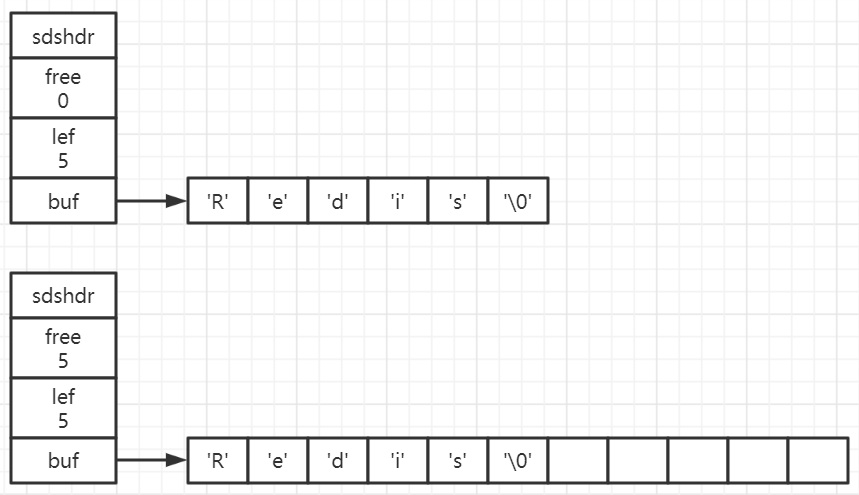

Redis数据模型
执行一条简单的命令set keyStr valueStr，Redis中的数据模型是怎样的呢？

-
dictEntry
Redis中的数据是以键值对的方式进行存储的，每个键值对都会有一个对应的dictEntry，包含三个部分：
key：指向key的指针
value：指向value的指针
next：指向下一个dictEntry
-
redisObject
对于Redis的值数据，不管是五种基本类型中的哪一种，都是通过redisObject来存储的，redisObject中包含的部分数据如下：
type：类型
encoding：编码
ptr：指向数据的指针
refcount：引用计数
lru：最后一次被命令程序访问的时间
-
sds
Simple Dynamic String，Redis没有直接使用C字符串作为默认的字符串表示，而是使用SDS来存储字符串
-
jemalloc
无论是dictEntry对象，还是redisObject对象、SDS对象，都需要内存分配器来分配内存，jemalloc就是内存分配器的一种
jemalloc
Redis在编译时会指定内存分配器，其默认为jemalloc；内存分配器可以为：libc、jemalloc、tcmalloc
jemalloc会根据目标需要使用的内存大小进行合理的分配：
| Category | Spacing | Size |
|---|---|---|
| Small | 8 | [8] |
| 16 | [16, 32, 48, 64, 80, 96, 112, 128] | |
| 32 | [160, 192, 224, 256] | |
| 64 | [320, 384, 448, 512] | |
| 128 | [640, 768, 896, 1024] | |
| 256 | [1280, 1536, 1792, 2048] | |
| 512 | [2560, 3072, 3584] | |
| Large | 4K | [4K, 8K, 12K , … , 4072K] |
| Huge | 4M | [4M, 8M, 12M, …] |
比如当需要存储200字节的数据时，jemalloc会分配224字节大小的内存单元供该数据使用
redisObject
Redis是以键值对的方式进行存储的。对于值，无论是哪种类型，Redis都不会直接存储，而是通过redisObject对象进行存储。
Redis对象的类型、内部编码、内存回收、共享对象等功能都需要redisObject的支持。
结构
1 | { |
-
type
type字段表示对象的类型，占4个比特，当执行type命令时，其底层便是通过redisobject的type字段来获取对象的类型的：
1
2
3
4
5
6
7
8
9
10127.0.0.1:6380> type stringkey
string
127.0.0.1:6380> type hashkey
hash
127.0.0.1:6380> type listkey
list
127.0.0.1:6380> type setkey
set
127.0.0.1:6380> type zsetkey
zset五种基本类型分别为：string、hash、list、set、zset
-
encoding
encoding表示对象的内部编码，占4个比特。对于Redis支持的每种类型，都有至少两种内部编码，Redis会根据不同的使用场景来为对象设置不同的编码，大大提高了Redis的灵活性和效率。
通过object encoding命令可以查看对象所采用的编码方式：
1
2
3
4
5
6
7
8
9
10127.0.0.1:6380> object encoding stringkey
"embstr"
127.0.0.1:6380> object encoding hashkey
"ziplist"
127.0.0.1:6380> object encoding listkey
"quicklist"
127.0.0.1:6380> object encoding setkey
"hashtable"
127.0.0.1:6380> object encoding zsetkey
"ziplist" -
ptr
ptr指针指向具体的数据
-
refcount
refcount记录的是该对象被引用的次数，类型为整型。refcount的作用主要在于对象的引用计数和内存回收：当创建新对象时，refcount初始化为1，当有新程序使用该对象时，refcount的数值会加1，当对象不再被一个新程序使用时，refcount的数值会减1，当refcount变为0时，对象占用的内存会被释放。
1
2
3
4127.0.0.1:6380> object refcount stringkey
(integer) 1
127.0.0.1:6380> object refcount hashkey
(integer) 1 -
lru
lru记录的是对象最后一次被命令程序访问的时间，通过对比lru时间与当前时间可以计算某个对象的闲置时间。使用object idletime命令可以显示该闲置时间（单位秒），且该命令不会改变对象的lru值。
1
2
3
4
5
6127.0.0.1:6380> object idletime stringkey
(integer) 6062
127.0.0.1:6380> get stringkey
"helloRedis"
127.0.0.1:6380> object idletime stringkey
(integer) 2lru与Redis内存回收的关系：如果Redis打开了maxmemory选项，且内存回收算法选择的是volatile-lru或者allkeys-lru，那么当Redis内存占用超过maxmemory指定的值时，Redis会优先选择闲置时间最长的对象进行释放。
共享对象
Redis中被多次使用的对象称为共享对象。Redis为了节省内存，当有一些对象重复出现时，新的程序不会创建新的对象，而是仍然使用原来的对象。这个被重复使用的对象就是共享对象。目前共享对象仅支持整数值的字符串对象。
-
为什么Redis的共享对象目前只支持整数值的字符串对象？
虽然共享对象可以降低内存消耗，但Redis也同样注重其性能。要判断一个对象是否是共享对象，就需要与已有共享对象进行比对。C字符串的底层是一个字符数组，要比较两个字符串是否相等，其复杂度为O(n)。对于哈希、列表、集合和有序集合的判断复杂度为O(n^2)。对于整数值，判断复杂度为O(1)，所以出于性能的考虑，Redis只支持整数值类型的共享对象。
-
初始化
Redis服务器在初始化时，会创建0~9999的共享对象，当Redis需要使用值为0~9999的字符串对象时，可以直接使用这些共享对象。Redis 4.0版本之前可以通过调整REDIS_SHARED_INTEGERS参数控制默认创建的共享对象的数量，Redis 4.0之后则是通过OBJ_SHARED_INTEGERS参数来调整。
-
验证
使用object refcount key命令查看对象的引用次数：
1
2
3
4
5
6
7
8
9
10
11
12127.0.0.1:6380> set sharekey 9999
OK
127.0.0.1:6380> object refcount sharekey
(integer) 2147483647
127.0.0.1:6380> set sharekey01 10000
OK
127.0.0.1:6380> object refcount sharekey01
(integer) 1
127.0.0.1:6380> set sharekey02 10000
OK
127.0.0.1:6380> object refcount sharekey02
(integer) 1
总结
lru在Redis 2.6版本中占22bit，在Redis 4.0版本中占24bit。所以综上所述一个redisObject的大小为：4bit(type) + 4bit(encoding) + 24bit(lru) + 4byte(refcount) + 8byte(ptr) = 16byte
SDS
C语言中字符串是以空字符 ‘\0’ 结尾的字符数组，考虑到直接使用C语言字符串的缺陷，Redis对其进行了封装。SDS是简单动态字符串（Simple Dynamic String）的缩写。
Redis 3.2之前版本
1 | struct sdshdr { |
len：记录buf数组中已使用字节的数量，也是SDS保存字符串的长度
free：记录buf数组中未使用字节的数量
buf[]：字节数组，用于保存字符串

buf数组中都是以’\0’结束的，所以buf数组的长度 = free的值 + len的值 + 1；一个SDS结构占据的空间 = free所占长度（4byte） + len所占长度(4byte) + buf数组的长度 + 1 = 字符串长度 + 9byte
Redis 3.2之后版本
1 | typedef char* sds; |
在Redis 3.2版本之后的sds有五种结构：sdshdr5、sdshdr8、sdshdr16、sdshdr32、sdshdr64，Redis会根据字符串的长度使用不同的结构。
当字符串的长度小于2^5时，使用sdshdr5结构
当字符串的长度在2^5与2^8之间时，使用sdshdr8结构
当字符串的长度在2^8与2^16之间时，使用sdshdr16结构
当字符串的长度在2^16与2^32之间时，使用sdshdr32结构
当字符串的长度大于2^32时，使用sdshdr64结构
对于sdshdr8、sdshdr16、sdshdr32、sdshdr64的结构都是相同的
len：已使用长度，也就是字符串的实际长度，不包含’\0’
alloc：分配的总长度，也不包含’\0’
flags：类型的标志，用一个字节的低三位来保存，主要有SDS_TYPE_5、SDS_TYPE_8、SDS_TYPE_16、SDS_TYPE_32、SDS_TYPE_64，分别对应数字0、1、2、3、4
buf[]：字符数组
sdshdr5的结构
flags：低三位保存类型，高五位保存字符串的长度
buf[]：字符数组
SDS与C字符串的比较
-
获取字符串长度的时间复杂度
SDS的时间复杂度是O(1)，C字符串是O(n)
-
缓冲区溢出
使用C字符串是，如果长度增加而忘记重新分配内存，很容易造成缓冲区溢出。SDS记录了长度，如果长度增加以致于超过了该长度，会重新分配内存，避免了缓冲区溢出
-
修改字符串时内存的重新分配
对于C字符串，如果要修改字符串，必须要重新分配内存，如果没有重新分配，字符串长度增大时会造成内存缓冲区溢出，字符串长度减小时会造成内存泄露。而SDS可以通过空间预分配策略使得字符串长度增大时重新分配内存的概率大大减小，惰性空间释放策略使得字符串长度减小时重新分配内存的概率也大大减小。
-
存储二进制数据
SDS可以存取二进制数据，但C字符串不可以。因为C字符串以空字符作为字符串结束的标识，对于一些二进制文件其内容可能包括空字符串，因此C字符串无法正确存取。而SDS记录了字符串的长度，因此知道字符串具体的结束位置
-
其他
当SDS用来存储文本数据时其buf数组仍然使用了C字符串，因此SDS此时可以使用C字符串库中的部分函数。在存储二进制数据时则不能